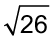

Capitulo 2
-Números Reais
16
Vamos relembrar os conjuntos já estudados.
- Troque ideias com um colega e representem, no caderno, os seguintes conjuntos
numéricos.
- Escrevam alguns números que pertencem ao conjunto dos números racionais e outros que pertençam ao conjunto dos números irracionais.


Conjunto dos números reais
A união do conjunto dos números racionais com os irracionais recebe o nome de conjunto dos números reais.

Podemos representar os números reais em uma reta numérica (chamamos de reta real). Veja alguns exemplos:
⚫
-5
-4
-4
⚫
-√5
-2
-2
⚫
-1,5252...
-1
-1
⚫
-√3/3
0
0
⚫
0,47
1
1
⚫
√2
2
2
3
3
⚫
π
⚫
4
5
5
Cada ponto da reta real corresponde a um número racional ou irracional.
Operações com números reais
Situação 1

17
Com o auxílio de uma calculadora, vamos calcular a raiz quadrada aproximada dos radicais que não são exatos. No próximo capítulo, estudaremos como encontrar o valor aproximado desses radicais sem o uso dela.
|
|

Logo:

Situação 2
Para calcular o valor da raiz quadrada, devemos encontrar um número real que, elevado ao quadrado, seja igual a - 4.
Vamos verificar se isso é possível.
- (+2)2 = (+2) · (+2) = + 4
- (-2)2 = (-2) · (-2) = + 4
Portanto, não existe um número real que, elevado ao quadrado, seja igual a - 4. Logo,  ∉ ℝ.
∉ ℝ.

18
Encontre soluções
- Em seu caderno, responda:
- Todo número irracional é real?
- Todo número inteiro é natural?
- Todo número racional é real?
- Todo número irracional é inteiro?
- Em seu caderno, copie os números do quadro abaixo, identificando a que conjuntos pertencem.

- Qual número é maior:
-  ou 5?
 ou 4,4?
ou 4,4? ou 6,4?
ou 6,4?
- Calcule, quando possível, com aproximação de uma casa decimal:
 c)
c) 
- d)
- Observe a reta real e os pontos indicados por letras:

-5
-4
C
-3

-2
B
-1
0
1
D
2
A
3
4
5
Relacione, em seu caderno, cada número real com a letra correspondente.
- π


- -π
- Movendo apenas um palito, transforme a igualdade abaixo em uma operação cujo resultado seja 139.
- (OBMEP) Pedro tem um tabuleiro 6 x 2 contendo as duas casas à direita pintadas em cinza como ilustrado abaixo:

Ele deve preencher todas as casas do seu tabuleiro com os números de 1 a 12 de modo que:
- em cada linha, os 6 números, lidos da esquerda para a direita, estejam em ordem crescente; e
- em cada coluna, o número de cima seja menor que o número de baixo.
- A maior soma que Pedro pode conseguir nas casas pintadas é 23. Mostre como ele pode atingir essa soma.
- A menor soma que Pedro pode conseguir nas casas pintadas é 18. Mostre como ele pode atingir essa soma.